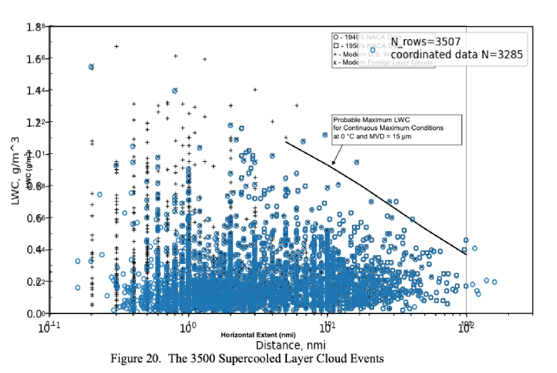
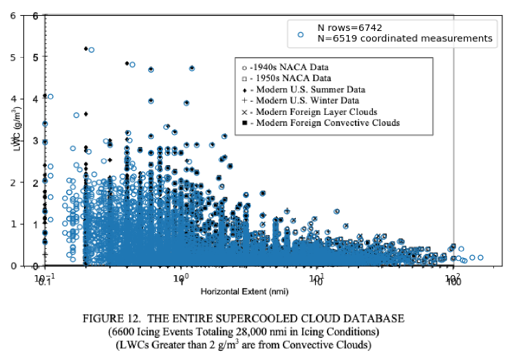
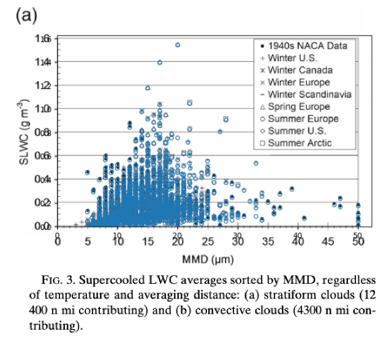

"28,000 nautical miles of in-flight measurements ... have been condensed into a computerized database"

There are 28000 nmi of measured natural icing flight test data in the database, with over 6000 individual measurements. Data from more than two dozen organizations for flights between 1952 and 1988 were collected into the database.
Dr. Richard Jeck of the FAA was a major contributor to the database. The data were analyzed in several of Jeck's publications. Reviewing the database and Jeck's publications gives us a opportunity to appreciate his decades of work in this field.
Jeck used the term "Supercooled Cloud Database", so here we will abbreviate that to SCDB.
It was also called the "Normal Icing Clouds" database,
to distinguish it from the Supercooled Large Drop (SLD) database.
For brevity, the SLD database will not be detailed here.
I requested a copy of the SCDB from the FAA, and was provided with a copy.
An aspect of the database that is not clear is if there have been different versions through the years. When I plotted the points from the database that I received on top of Figure 12 from AR-00/30, some of the points correspond exactly, but many do not. The total calculated miles of database (28,029 nmi), however, match the "28,000 nmi" within rounding. The database has 6742 rows in it, but not every row has "coordinated" values (both the DISTANCE and AVGLWC values greater than zero). There are 6519 events with coordinated values in the database.

For AR-07/4 Figure 20, it notes 3500 layer cloud data points, but the layer-cloud portion of the database that I received had 3285 points. Some of the points do not correspond.



ATSC introduces and interesting data analysis. Many of the individual measurements were not terminated because the cloud was exited. Many use prescribed distance or time targets for the measurement. Jeck collected and averaged such sequential measurements and treated them as one measurement.
The curves depict the cumulative LWC probability for generally longer cloud transects consisting of one or more uniform intervals strung together until the research airplane leaves the cloud or reverses direction.
[Fig 16 of AR-07/4]
Related
This is part of the series 28,000 Miles of Data: The Publications of Dr. Richard Jeck
-
Jeck, R.: "A new database of supercooled cloud variables for altitudes up to 10,000 feet AGL and the implications for low altitude aircraft icing. US Department of Transportation Rep." Transportation Rep. DOT/FAA/CT-83/21 137 (1983). ntrs.nasa.gov
-
A new characterization of the icing environment below 10,000 feet AGL from 7,000 miles of measurements in supercooled clouds
https://ntrs.nasa.gov/citations/19860002276 -
Guttman, Nathaniel B., and Richard K. Jeck. "Aircraft icing environment in low ceiling conditions near Washington, DC." Weather and Forecasting 2.2 (1987): 114-126.